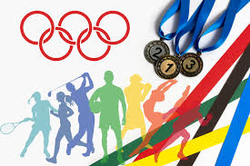
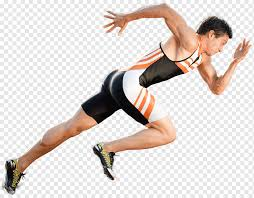
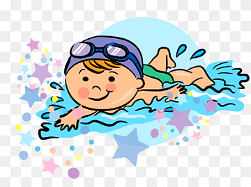
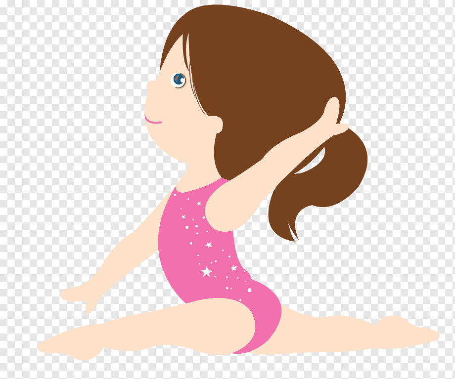
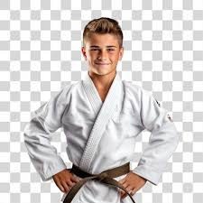
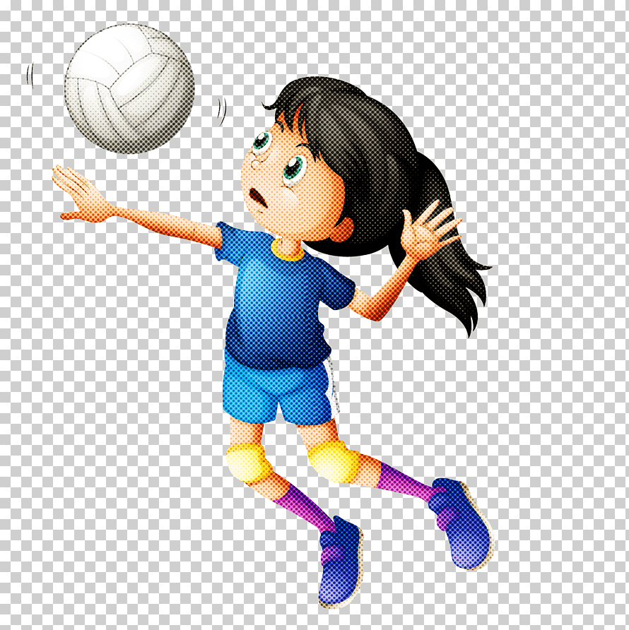

MODALIDADES

Atletismo
Descrição: O atletismo é um dos esportes mais antigos dos Jogos Olímpicos, com suas origens na Grécia Antiga. Inclui uma variedade de eventos, como corridas (sprint, meio-fundo, fundo), saltos (distância, altura, triplo), lançamentos (disco, dardo, martelo) e provas combinadas (decathlon e heptathlon).
Características: Os eventos são divididos em corridas de pista, competições de campo e provas combinadas. É um esporte que testa velocidade, resistência, força e técnica.
Curiosidade: Usain Bolt, da Jamaica, é um dos atletas mais notáveis do atletismo, detendo recordes mundiais em 100m e 200m.

Natação
Descrição: A natação é um esporte aquático que envolve nadar em diferentes estilos, como livre, peito, costas e borboleta. As competições podem ser individuais ou em revezamento.
Características: As provas variam em distância e estilo. A natação é um esporte que combina velocidade, resistência e técnica.
Curiosidade: Michael Phelps, dos EUA, é o nadador mais bem-sucedido da história olímpica, com um total de 23 medalhas de ouro.

Ginástica Artística
Descrição: A ginástica artística é um esporte que combina acrobacias e habilidades de força e flexibilidade. Inclui eventos como solo, barras assimétricas, salto e paralelas.
Características: É conhecido por suas rotinas altamente técnicas e coreografadas. Atletas devem demonstrar habilidade, graça e controle corporal.
Curiosidade: Simone Biles, dos EUA, é considerada uma das maiores ginastas de todos os tempos, com múltiplas medalhas de ouro e um estilo inovador.

Judô
Descrição: O judô é uma arte marcial e esporte de combate originado no Japão. O objetivo é lançar, imobilizar ou forçar o adversário a se render usando técnicas de agarramento e projeção.
Características: O judô se baseia em técnicas de alavancagem e equilíbrio, permitindo que um praticante menor possa vencer um oponente maior.
Curiosidade: O judô foi introduzido nos Jogos Olímpicos em 1964 e é um esporte altamente técnico e estratégico.

Voleibol
Descrição: O voleibol é um esporte de equipe jogado em uma quadra dividida por uma rede. Cada equipe tenta enviar a bola sobre a rede e fazê-la tocar o chão no campo adversário.
Características: As equipes são compostas por seis jogadores cada, e o jogo é dividido em sets. A habilidade de comunicação e trabalho em equipe é crucial.
Curiosidade: O voleibol de praia, uma variante do voleibol tradicional, foi introduzido como esporte olímpico em 1996 e é disputado em duplas.
